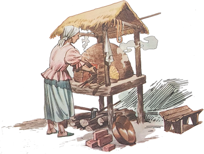
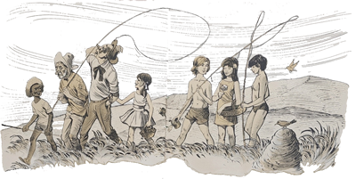
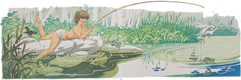
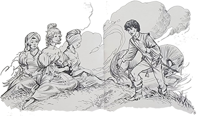
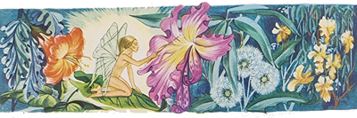
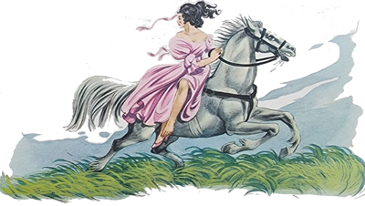
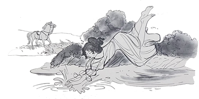

Em outra pequena e antiga cidade, o Arrelia, acompanhado das crianças, lembrou-se de visitar um seu velho conhecido, Nhô Eusébio, e a esposa deste, Nhá Jana. Eram idosos mas sacudidos e habitavam, não muito perto da cidade, um modesto mas bem cuidado sítio onde, ajudados por seus quatro filhos e mais três empregados, plantavam e colhiam uma infinidade de coisas. Também possuíam algumas vacas leiteiras, que eram o orgulho de todos daquele sítio, bem como outros animais e diversas aves. O mais interessante era que Nhô Eusébio introduzira bem poucas inovações ali, conservando a maioria dos usos antigos. Assim, estavam em plena atividade o pilão, a moenda movida a burro, o forno à lenha e o tacho de fazer doces.
Uma vez em que Carlinhos estava pesquisando o lugar, ouviu umas pancadas que vinham de perto e logo ficou curioso em saber do que se tratava. Não demorou muito em encontrar o motivo: Nhô Eusébio socava energicamente farinha e carne-seca no pilão, preparando a paçoca. O menino foi chegando de mansinho e colocou-se perto do sitiante.

- Está gostando? – perguntou Nhô Eusébio, sem parar de bater.
- É divertido – respondeu Carlinhos, demonstrando o maior interesse.
- Divertido? – espantou-se Nhô Eusébio, sorrindo. É muito cansativo, isto sim.
- Não parece. Posso experimentar?
- Se quiser . . . Assim aproveito para ir tomar água sem atrasar o trabalho.

Carlinhos assumiu com indizível prazer a incumbência e começou a bater de gosto. Não custou, porém, a perder o entusiasmo. A falta de costume o traiu e as pancadas foram-se distanciando cada vez mais.
Quando Nhô Eusébio voltou, Carlinhos suava por todos os poros.
- Uai! O que aconteceu? Você está doente? – perguntou espantado o sitiante.
Com muito esforço, ele respondeu que não. Apenas estava cansado. Sentia muito calor. Nhô Eusébio mostrou-se apreensivo:
- Você não está costumado! Nem pensei nisso! Vá descansar, meu filho, vá.
Carlinhos saiu sem dizer palavra, esfregando os braços e fazendo caretas. Encontrou o Arrelia manejando uma comprida taquara, com a qual tentava apanhar uma laranja. Viu Carlinhos que ia passando por ele, descansou a taquara e disse-lhe:
- Que aconteceu com você? Não está bem? Que cara de poucos amigos!
Com voz arrastada, Carlinhos contou-lhe o que acontecera.

- Isso logo passa – consolou-o o Arrelia e continuou a tentativa de caçar a laranja.
A laranja acabou por render-se e caiu, passando rente da testa do menino. Arregalando os olhos, ele disse ao Arrelia:
- Puxa! Quase que me pega! Já vi que hoje não é o meu dia. A melhor coisa é eu ficar dentro da casa – e foi embora o mais depressa que pode.
Apanhando a laranja, o Arrelia começou a descascá-la cuidadosamente com um canivete. Estava chupando-a com a maior dedicação quando surgiram Sérgio e Iberê.
- Olá – saudou-os o Arrelia. Querem chupar laranja?
Os dois meninos responderam que não sentiam vontade. Surgiu então um dos empregados trazendo ao ombro um feixe de canas. Iberê ficou curioso.
- Aonde será que vai ele? – perguntou.
- A moenda – esclareceu o Arrelia, seguindo o homem com o olhar.
Os meninos revelaram o desejo de ver a máquina em funcionamento, pois ainda não haviam tido a oportunidade, e os três seguiram o empregado, que, descansando o feixe no chão, perto da moenda, foi buscar o burro para girá-la.
Enquanto a moenda funcionava, o empregado foi explicando:
- Hoje não era dia da moenda trabalhar, mas Nhô Eusébio quer que vocês tomem uns copos de garapa.
Os dois meninos gritaram ao mesmo tempo: “Viva! Que bom!”
O Arrelia virou os olhos, passou a língua pelos lábios e exclamou, completamente extasiado:
- “Garaupa”? Que maravilha! Que grande ideia teve Nhô Eusébio!

- Ele quer que vocês sejam bem tratados – disse o empregado, continuando a colocar os pedaços de cana na moenda.
- Sei quanto Nhô Eusébio é hospitaleiro – respondeu o Arrelia. Mas não quero que tenham muito “trabaulho” conosco.
O empregado afirmou que não era trabalho nenhum e, terminando o serviço, soltou o burro e saiu carregando o vasilhame com o caldo. O Arrelia e os dois meninos seguiram com ele, sem tirar os olhos da garapa.

Dentro de casa, encontraram as outras crianças. Carlinhos repousava, confortavelmente instalado numa cadeira de balanço, quase dormindo. Animou-se ao ver o caldo de cana e tratou de reunir-se aos outros, que já estavam enchendo os copos trazidos por Nhá Jana.
- Calma, pessoal! – gritou ele. Deixem um pouco para mim!
- Não tenha medo – disse o Arrelia. Aí tem garapa até para um batalhão!
Carlinhos começou a beber copo atrás de copo. Depois de admirá-lo com espanto, o Arrelia avisou-o:
- Olhe, Carlinhos. Tenha calma. Desse modo você vai afogar-se!
- Está muito gostoso! Mais um! – respondeu o menino e emborcou outro copo.
- Bom, não vá dizer que não avisei! Pode fazer-lhe mal! Advertiu o Arrelia.
Carlinhos ainda enxugou mais um copo antes de voltar a sentar-se na cadeira de balanço.
Todos os outros também procuraram onde sentar-se. Depois de algum tempo, o Arrelia perguntou a Carlinhos:
- Você tem alguma coisa? Que cara!
- Não estou bom! – gemeu o menino, começando a esfregar a barriga.
- Eu não “diusse”? Por que foi exagerar? Aí está o resultado.
Não foi pouco o trabalho que ele deu. Felizmente, logo passou e tudo voltou à normalidade. Enquanto os meninos passeiam com o Arrelia pelo sítio, vamos encontrar jaci e Marisa visitando a cozinha onde Nhá Jana, auxiliada por outra mulher, prepara doces caseiros.
- O que a senhora está fazendo? – quis saber Jaci.
- Ué, a menina não está vendo? – surpreendeu-se Nhá Jana. Doces, minha filha, doces.

- Doces de quê?
- De coco. Estamos fazendo cocadas. Vocês gostam?
As meninas afirmaram com entusiasmo.
- Logo estarão prontos e vocês poderão comer à vontade – prometeu Nhá Jana.
- Podemos ajudar? – perguntou Marisa, aproximando-se mais do fogão.
- Agora não. Mais tarde. Não chegue muito perto do fogo que é perigoso.
As duas meninas sentaram-se à mesa e ficaram apreciando.
Mais tarde, as duas mulheres começaram a deitar colheradas do doce no mármore da pia, preparando as cocadas. Marisa não resistiu e tentou pegar uma.
- Ai meus dedos! Queimei os dedos! – gritou ela, sacudindo a mão no ar e afastando-se aos pulos.
Nhá Jana e a outra mulher correram para a menina, assustadas. Jaci continuou sentada, branca de susto.
Algum tempo depois, o Arrelia saiu com as crianças pelo sítio. Marisa e Carlinhos caminhavam um tanto desanimados, abatidos pelos acontecimentos.

- Como estão jururus! – exclamou o Arrelia, abraçando-os. Coragem! São coisas que acontecem!
- É, eu sei – disse Marisa. Mas você não sabe a dor que estou sentindo. Se estivesse no meu lugar, não ia ter coragem, não.
- E eu estou meio morto – disse Carlinhos, com a expressão mais desolada do mundo.
- Está certo – respondeu o Arrelia. Não adiante, porém, ficar pensando nisso. Procurem distrair-se e animar-se.
Apesar da boa vontade dos dois, não conseguiram animar-se.
No dia seguinte, o Arrelia e as crianças andavam pelo sítio e encontraram Nhô Eusébio ocupado em empilhar lenha perto do grande forno de tijolos.
- Vai acender o forno, Nhô Eusébio? – perguntou o Arrelia.
- Sim. Hoje é dia de fazer pão – respondeu ele, continuando a arrumar a lenha.
- Se o senhor quiser, nós podemos ajudar. Não temos mesmo “nauda” para fazer . . .
As crianças receberam a ideia com alegria.
- Se fazem questão . . . – disse o Nhô Eusébio, meio hesitante.
Eles insistiram. Nhô Eusébio animou-se:
- Até que é interessante. Assim as pessoas que iam ajudar poderão fazer outro serviço. Vou dizer que não precisam vir e volto já.
O sitiante afastou-se e o Arrelia começou a preparar-se: colocou o chapéu e a bengala num galho de uma árvore, tirou o paletó e colocou-o também ali, depois tratou de arregaçar as mangas.
- Pelo jeito, o trabalho vai ser duro. Não estou gostando, não – murmurou Carlinhos.
- Deixe de ser preguiçoso – disse Iberê. Trabalhar faz bem. É um bom esporte.
- Ele ficou assim por causa da garapa de ontem – lembrou Jaci. Ainda está verde!
- Já vou avisando – disse Marisa. Estou com os dedos queimados e não posso ajudar.

- Pronto! – exclamou Jaci. Essa também! Que gente esperta!
Nhô Eusébio voltou e pôs todos a trabalhar. Organizou com eles uma fila para transportar a lenha de um em um até o forno. De nada adiantou a alegação de Marisa sobre os seus dedos queimados, pois Nhô Eusébio respondeu-lhe que para transportar a lenha daquela forma bastava usar os braços. Carlinhos, que esperava a oportunidade de se queixar, achou melhor não contrariar o homem e conformou-se em ser um elo daquela corrente de trabalho.
O forno foi aceso, depois as brasas foram retiradas e era chegada a hora de colocar os pães. Ao Arrelia e às crianças coube a tarefa de transportar os pães da cozinha ao forno e vice-versa.
Terminada a tarefa, estavam que não podiam mais. Largaram-se no terraço da casa e não quiseram saber de mais nada. Chegou, porém, a hora do café, e eles tomaram posição à mesa. A vista dos pães ainda quentes, eles animaram-se.
- Então? Valeu ou não valeu o sacrifício? – perguntou Nhô Eusébio.
- Se valeu! – exclamou o Arrelia, cobrindo de manteiga outra fatia de pão.
- Assim dá gosto comer pão, não é mesmo? – disse Carlinhos, esperando com ansiedade que o Arrelia lhe passasse a lata de manteiga.
Marisa, ao segurar com firmeza o seu pedaço de pão, nem se lembrou dos dedos queimados.
Todos expressaram com palavras entusiásticas a sua satisfação, menos Iberê, que não encontrou tempo para abrir a boca, a não ser para abocanhar impressionantes pedaços de pão.
Depois saíram, acompanhados por Nhô Eusébio, a caminho de uma lagoa que havia não muito longe do sítio. Iam pescar.
O que chamou a atenção do Arrelia e das crianças foi a cor da água. Era de um azul límpido, tranquilo.
Jaci e Marisa resolveram colher flores; Sérgio e Iberê preferiram nadar; o Arrelia, Nhô Eusébio e Carlinhos prepararam-se para pescar.
Ao saber da intenção de Sérgio e Iberê, Nhô Eusébio pediu-lhes:
- Vão nadar naquela ponta. Senão os peixes fogem. Não saiam de lá.
Passou-se algum tempo e as meninas e os nadadores juntaram-se aos pescadores, que ainda não tinham conseguido fisgar um peixe sequer.
- Ih! Agora é que não pegaremos nada. Essa gente fala pelos cotovelos! – disse o Arrelia.

- Não tem importância – respondeu Nhô Eusébio com ar de conformado. Parece que hoje não se pesca nada mesmo.
- Mas costuma haver peixe nessa lagoa? – interrogou o Arrelia. Dá a impressão de não haver nenhum! Não é brincadeira sua?
- Costuma, como não? – disse o sitiante. As vezes acontece como hejo. Deve ser o tempo. Ou talvez estejam conversando com a moça Dalva.
- Essa lagoa é encantada? – perguntou Carlinhos.
- Tem sua lenda também – respondeu o sitiante. É rara a lagoa que não possua uma lenda pelo menos. Dizem que a moça Dalva vive nessa lagoa. Há muitas lendas sobre moças que vivem em lagoas.
As crianças pediram a Nhô Eusébio que lhes contasse a estória.
- Bem, peixe a gente não pega mesmo – considerou ele pensativamente. Portanto é melhor conversar para distrair.
Nhô Eusébio espetou na terra a vara de pescar e começou:
- Tão logo souberam que estas terras eram ricas em ouro e diamantes, diversos homens ousados e ambiciosos vieram para cá na esperança de enriquecerem. Contando que conseguissem realizar seu desejo, não olhavam os meios. Nem todos conseguiram o que pretendiam. Uns ficaram mais pobres do que eram, outros conseguiram remediar-se e alguns poucos ficaram realmente ricos. Estes eram de fato poderosos e sua vontade era lei. Entre estes últimos estava o pai de Dalva. Ele possuía importantes garimpos de ouro e diamantes, de onde inúmeros escravos extraíam a riqueza necessária para seu amo viver fartamente.
A moça era filha única e seu pai lhe dava o que havia de melhor: roupas trazidas do estrangeiro especialmente para ele; joias que deixariam um rei envergonhado; perfumes finíssimos que tornariam sem jeito as flores mais perfumosas.
O mal era que o orgulho dele escravizava a filha de tal modo que muitas vezes ela desejou ser pobre e viver com maior liberdade. Ele era tão exigente neste ponto que não deixava a moça sair de casa sem estar com o rosto coberto e acompanhada por escravos de confiança.
Naturalmente ela não gostava nada de andar assim oculta, e sempre que podia reclamava ao pai:
- Por que não posso ser como as outras moças? Por que hei de sair sempre com o rosto coberto como se eu me estivesse escondendo de alguém?

- Ora! Será que você não compreende? – resmungava ele.
- Compreender o que?
- Que é filha do homem mais rido deste lugar?
- E o que tem isso?
- Tem que não é qualquer um que possui o direito de ver-lhe o rosto. Essa pobre gente não merece tal privilégio.
A moça não teve outro modo senão continuar a sair com o rosto coberto.
Às vezes, um moço menos avisado aproximava-se da casa do ricaço, movido pela curiosidade de conhecer-lhe a filha. Pobre dele. Se o homem percebia, mandava alguns de seus escravos mais fortes fazerem-lhe uns carinhos com chicotes e porretes. Pobre do moço. Saía que saía gemendo, jurando nunca mais voltar.
Um dia a moça Dalva quis saber:
- Por que o senhor faz isso, meu pai?
- Ora, por quê? Não vê que são uns aventureiros? Pretendem casar-se com você para ficar com o meu dinheiro. Mas podem desistir porque não vai ser fácil, não. Pelo menos enquanto eu estiver vivo.
- O senhor não deveria preocupar-se com isso. Sabe que nem tomo conhecimento da presença deles. Não há necessidade de maltratá-los tanto.
- Como não? Eles precisam aprender.
Os escravos já estavam cansados de tanto surrar os moços que tentavam conhecer Dalva.
Certa ocasião, quando ela havia saído a passeio pelo campo com algumas escravas, resolveu tirar o véu com o qual sempre cobria o rosto ao sair.
- Olhe, sinhá, seu pai não vai gostar disso. Pode ficar bravo – disse uma das mucamas.
A moça achou graça:
- Ele não quer que os estranhos vejam meu rosto. Mas quem vai encontrar-me neste lugar? Só se forem as aves, os bichos.
- Sabe como o patrão é – tornou a mucama. Quando dá uma ordem é para ser cumprida.
- Não tenha medo – afirmou a moça. A ordem que ele deu é para a cidade. No campo não tem valor.
As escravas acabaram por concordar com a argumentação da moça embora não conseguissem deixar de sentir um arrepio ao pensarem na possibilidade de uma punição. O homem era famoso por sua perversidade.
Dalva e as mucamas sentaram-se na relva e puseram-se a conversar sobre os mais variados assuntos. Uma das escravas era muito engraçada e sabia contar anedotas como ninguém. Dalva e as outras riam até que não podiam mais.
Estavam assim distraídas quando surgiu um cavaleiro. Vinha devagar e seu cavalo aparentava grande cansaço. Aproximou-se das moças, tirou o chapéu e perguntou-lhes diversas coisas sobre a região. Enquanto falava, não conseguia tirar os olhos da direção de Dalva. Nem ela nem as escravas se haviam lembrado da ordem de seu pai. O cavaleiro ficou encantado com Dalva e ela, por sua vez, não deixou de impressionar-se com o porte do forasteiro: forte, decidido, desenvolto, possuidor de uma simplicidade encantadora. Contou-lhes que vinha de longe, que era um garimpeiro à procura de fortuna.
Antes de ir embora, o moço perguntou onde era a casa de Dalva. Ela deu-lhe a informação diante dos olhos surpresos das mucamas. Uma das escravas não resistiu:
- Sinhá! Se ele aproximar-se de casa será espancado por ordem de seu pai!
- Eu ia avisá-lo – respondeu a moça e contou ao jovem como era seu pai.
O estranho ficou horrorizado e disse que dinheiro nenhum pagava aquele sofrimento.

Ele partiu prometendo escrever-lhe. E assim começou a troca de bilhetes. Uma das mucamas, a mais amiga de Dalva, foi escolhida para recadeira. Os bilhetes iam e vinham cada vez em maior quantidade e o namoro foi ficando cada vez mais firme.
- E o pai dela não descobriu “nauda”? – perguntou o Arrelia, ainda segurando sua vara de pescar.
Era o único que ainda insistia em manejar a vara. Carlinhos havia imitado Nhô Eusébio e espetado também na beira da lagoa a vara de pescar.
Diante da pergunta do Arrelia, Nhô Eusébio ficou surpreso:
- E o que é que não se descobre? Não demorou muito para que acontecesse.
Nhô Eusébio deu uma olhada vagarosa à vara de pescar, na esperança de vê-la vibrar com as puxadas de algum peixe, mas desiludiu-se. Continuou a falar sobre a lenda:
- Uma das mucamas incumbidas de fazer companhia a Dalva concluiu que se falasse ao pai da moça sobre o namoro por certo seria recompensada:
- Que malvada! Não podia ficar quieta? – exclamou Jaci, indignada.
Nhô Eusébio respondeu pensativamente:
- Em todo segredo sempre há um traidor. Parece que tem de ser assim mesmo.
Depois de algum silêncio, prosseguiu:
- O pai de Dalva tomou todas as providências para surpreender o audacioso garimpeiro. Colocou escravos espiões atrás do moço para que ele fosse surpreendido no momento de enviar algum bilhete. Mandou que os escravos acompanhassem a mucama e disse-lhes:

- Procurem ter certeza de que ele é o homem. Depois fiquem atrás dele até surgir uma boa oportunidade. Aí . . . já sabem o que fazer, não é mesmo? – e fez um gesto significativo.
Os escravos partiram, e o pai de Dalva ficou bufando de ódio. Por sua vez, avisado pela escrava traidora, queria surpreender a mucama recadeira para dar-lhe o castigo que achava merecido.
Guiados pela escrava, não demorou muito para que vissem a mucama de confiança de Dalva receber um bilhete de um moço. Então era aquele. Trataram de ir atrás do namorado. Ele saiu a cavalo e os escravos também.
Enquanto isso acontecia, a mucama foi entregar o bilhete à sua patroa. No momento exato o pai de Dalva apareceu:
- Muito bem – disse ele à mucama. Quer dizer que você esqueceu as minhas ordens, não é verdade? Pois nunca mais esquecerá nada, pode ficar sossegada.
Imediatamente ele chamou alguns escravos e mandou que levassem a mucama para o castigo.
De nada valeram os gritos da infeliz. Dalva implorou ao pai que não castigasse a mucama pois não era culpada. A culpa era de Dalva e de mais ninguém. Ele não quis saber de nada. Mandou que a filha fosse para o quanto e de lá não saísse até segunda ordem. Depois foi ver o castigo da mucama. Mandou que a amarrassem a um poste de madeira e ordenou aos escravos:
- Batam até que ela não se queixe mais.
A mucama não resistiu às chicotadas e morreu ali mesmo.
Um pouco longe dali, os escravos que estavam seguindo o namorado de Dalva inham encontrado a esperada oportunidade. O garimpeiro havia apeado perto desta lagoa, conhecida por Lagoa Azul, para dar de beber ao seu cavalo. Um escravo apontou-lhe a espingarda e atirou. Foi enterrado aqui, na beira da lagoa.

O pai de Dalva ficou muito satisfeito com o resultado. Resolveu dar pessoalmente à sua filha o que ele considerava uma boa notícia.
- Pois é, minha filha – disse ele, com uma expressão de alegria. Posso afirmar-lhe que a mucama recadeira não fará mais o que fez. Creio que ela ganhava dinheiro daquele malandro que só queria a minha riqueza. Agora ele não tem mais quem lhe traga os recados. Sabe por quê? Porque ela está morta. E também ele não precisaria mais dela já que não poderá escrever mais.
A moça, percebendo pelos modos do pai que algo de ruim tinha acontecido ao namorado, perguntou aflita:
- Por quê? O que aconteceu a ele?
O ricaço deu uma gargalhada e respondeu bem devagar:
- A esta hora ele está descansando para sempre perto da Lagoa Azul.
Dalva, completamente transtornada pela notícia, correu para o seu quarto aos prantos e assim ficou durante algum tempo. Seu pai, temendo que ela praticasse um desatino, ficou atento. Mas foi em vão. Ela conseguiu sair de casa e, montando a cavalo, partiu para a lagoa. Tão logo chegou, desceu e atirou-se às águas. Em sua perseguição vinha seu pai acompanhado de diversos escravos, todos a cavalo. Vinham em rápido galope, o mais rápido que podiam, porém chegaram tarde. Dalva não foi encontrada. Arrependido, seu pai usou de todos os recursos para encontrar a filha. Porém ela havia sumido misteriosamente.
- Puxa! – exclamou o Arrelia. E como foi que desapareceu?
Nhô Eusébio tornou a olhar para a sua vara de pescar e respondeu:
- Por um poder mágico, a Lagoa Azul tinha transformado a infeliz moça numa fada.
- Não “diuga”!
- Pois é. Os garimpeiros tem muito medo de chegar perto deste lugar. Dizem alguns que já viram a moça Dalva chorando na beira da lagoa quando é noite de luar. Até hoje ela tem esperança de encontrar seu namorado. Como ele era garimpeiro, ela atrai para o fundo das águas, com seus olhos que agora parecem dois enormes e lindos diamantes, todos os garimpeiros que do lugar se aproximam. Ela quer ver de perto se algum deles é o seu namorado.